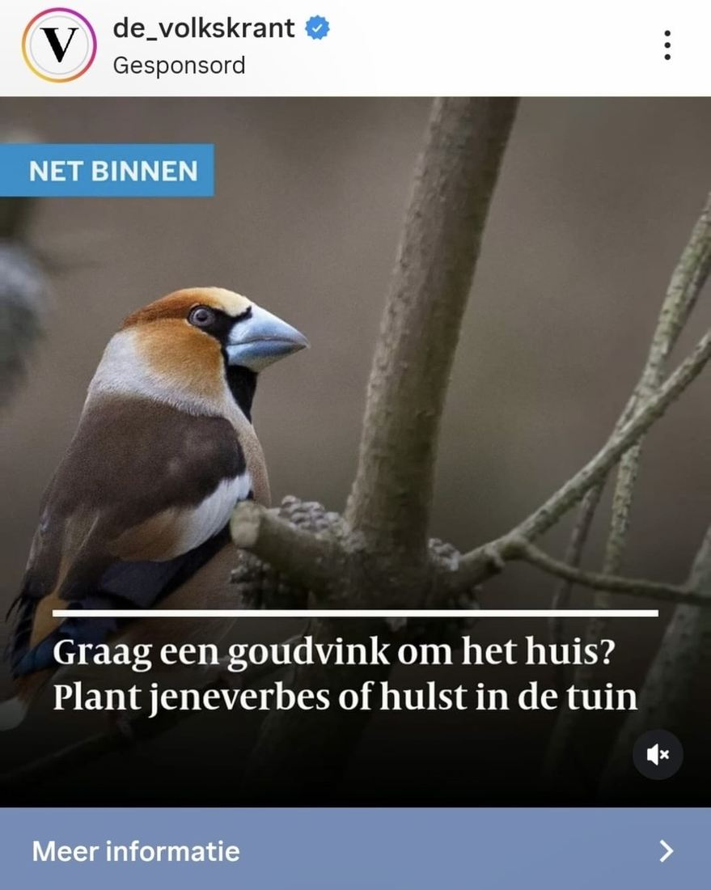

Appelvink, geen goudvink
22 december 2025 · de Volkskrant
- Op de foto
- Appelvink
- Het ging over
- Goudvink

Foutje van @de_volkskrant 👀
Wel een vink, maar niet van goud.
De vogel op de foto is namelijk een Appelvink, geen Goudvink.
Kleine nuance: in het artikel zelf staat de soortnaam wél correct genoemd, alleen de gebruikte foto hoort bij een andere soort.
Kan gebeuren, maar voor een krant met zoveel bereik is het wel zo fijn als beeld en tekst overeenkomen 😊